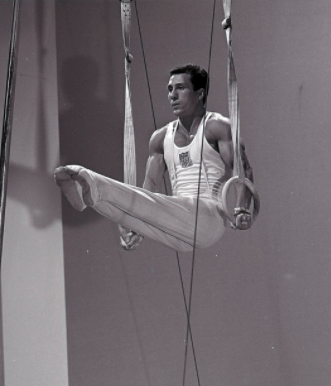

Armando Vega (USA)
1956 Olympian
1958 and 1962 World Championships Team Member

Armando was born on October 24,1935, in Hurley, New Mexico. He won six NCAA titles while competing at Penn State University. After retiring from competitive gymnastics, he worked as a judge (including the 1968 Olympics) and collegiate coach (at LSU), and led many gymnastics clinics throughout the world.
Competition Results
1954
AAU Championships: 2nd PB
1956
Olympics: 6th Team, 31st AA
1957
AAU Championships: 2nd AA, 1st R, 1st V, 1st PB, 3rd HB, 4th FX
NCAA Championships: 1st AA
1958
AAU Championships: 4th AA, 2nd V, 3rd PB, 3rd R, 4th FX
Barcelona International: 4th AA, 2nd V, 4th FX, 4th R, 4th HB
Ben Price Memorial: 4th AA
World Championships: 7th Team, 59th AA
1959
Eastern Intercollegiate Championships: 1st Team, 1st AA, 1st FX, 1st R, 1st V, 1st PB, 2nd HB
NCAA Championships: 1st R, 1st PB, 2nd FX, 4th HB, 8th PH
Pan American Games Trials: 2nd AA
USA-FIN Dual Meet: 2nd AA
1960
AAU Championships: 2nd AA, 1st FX, 1st PB, 2nd R, 3rd V
1961
AAU Championships: 7th AA, 5th R, 5th PB, 6th V
CSSR-USA Dual Meet: 2nd Team, 2nd AA, 1st FX, 1st R, 1st HB, 2nd PB, 3rd V
Pasadena National Invitational: 2nd AA
POL-USA Dual Meet: 1st Team, 1st FX, 1st V
Southern Pacific AAU Championships: 2nd AA, 1st FX, 1st PB, 2nd V, 4th HB, 6th R
USA-JPN Dual Meet: 2nd Team, 5th AA
USA-USSR Dual Meet (Philadelphia): 2nd Team, 8th AA, 1st FX, 2nd R
USSR-USA Dual Meet (Moscow): 2nd Team, 2nd FX, 3rd R, 3rd V
1962
AAU Championships: 4th AA, 2nd R, 2nd PB, 3rd V, 5th FX
Ben Price Meet: 2nd AA
East v. West Meet: 1st FX, 1st V, 1st HB
FRG-USA Dual Meet: 1st Team, 6th AA
Pasadena National Invitational: 2nd AA, 1st V, 2nd FX, 2nd R
San Francisco Invitational: 1st AA
World Championships: 6th Team, 35th AA
1963
AAU Championships: 3rd AA, 1st FX, 1st R, 1st V, 1st PB
Ben Price Meet: 12th AA
1964
AAU Championships: 3rd AA, 1st R, 1st V, 1st PB, 2nd FX, 4th HB
Ben Price Memorial Invitational: 2nd AA
US Olympic Trials: 3rd AA
USA-CSSR Dual Meet: 2nd Team, 11th AA
This page was created on October 12, 2002
and was last updated on June 23, 2021.
© Gymn Forum